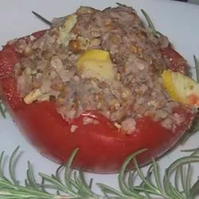

Beautiful Salad

Description
Buckwheat and Summer Squash Salad
Ingredients
- 2 cups uncooked buckwheat
- 4 cups water
- ½ teaspoon salt
- 1 large summer squash, thinly sliced
- 1 cup cooked garbanzo beans
- ½ cup chopped toasted walnuts
- ¼ cup grated Parmesan cheese
- 1 lemon, juiced
- 1 tablespoon chopped fresh parsley
- 2 tablespoons olive oil
- salt and black pepper to taste
Directions
- Bring the buckwheat, water, and salt to a boil in a saucepan. Cook at a boil for 7 minutes; drain and pour into a mixing bowl. Refrigerate until cooled to room temperature.
- Place the summer squash, garbanzo beans, walnuts, and Parmesan cheese into the bowl with the buckwheat. Season with lemon juice, parsley, olive oil, salt, and pepper. Gently stir until evenly combined; serve at room temperature.